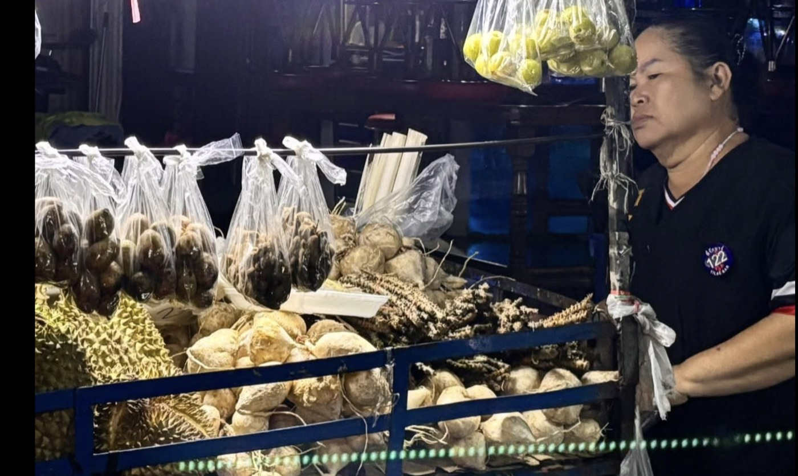

- भुजा खायेंगे,सर?
- हां, खा तो लेंगे, लेकिन मेरे पास पैसे नहीं हैं, मतलब कैश नहीं है.
- तब कैसे चलेगा, सर!
- इसीलिए तो मैं पहले ही बता दिया.
दरअसल अभी मुझे यहाँ नहीं होना था. एयर एशिया की प्लेन पाँच घंटे की देरी से उड़ी और बैंकॉक से मेरी कनेक्टिंग फ्लाइट छूट गई. मुझे जहां जाना है वहाँ के लिए आज कोई फ्लाइट नहीं है, तो एयरलाइन ने मेरे लिए एक होटल रूम बुक कर दिया है. होटल एयरपोर्ट और मुख्य शहर के बीच कहीं है, जहां पहुंचते और चेक-इन करते-करते आधी रात हो गई है.
मुझे भूख लगी है और आसपास सबकुछ बंद है. होटल वाले बताते है कि ऑनलाइन ऑर्डर ही एक मात्र विकल्प है, शायद पिज़्ज़ा मिल जाए. फ्लाइट देर होने के चलते लगभग आठ घंटे एयरपोर्ट के अंदर एक तहखानेनुमा जगह में बिताने और फिर एक लंबी फ्लाइट के बाद मेरा मन होटल रूम में बैठकर खाने का एकदम नहीं है. और पिज़्ज़ा तो एकदम नहीं खाना है. मुझे कहीं बाहर जाना है, खुली जगह में बैठकर कुछ खाना है.
मैं अमूमन कहीं भी जाने से पहले वहाँ के बारे में ठीक-ठाक रिसर्च कर लेता हूँ. थोड़ा इतिहास-भूगोल, भाषा-संस्कृति और खान-पान की जानकारी के लिए कुछ किताबें पढ़ लेता हूँ. लेकिन इस औचक यात्रा के चलते यह शहर बहुत अजनबी लग रहा है.
ऑनलाइन सर्च करने पर पता चलता है कि बैंकॉक की 'बदनाम' गलियों में से एक सोइ काउबॉय में रात के तीन बजे तक चहल-पहल रहती है. दरअसल नियॉन लाइटों से लबरेज़ अनेकों बार और नाइट-क्लब वाली यह छोटी सी गली मुख्य रूप से विदेशी पर्यटकों की रात्रिकालीन अड्डा है.
मैं ग्रैब (साउथ-ईस्ट एशियन देशों में ओला-उबर जैसी, मगर अपेक्षाकृत सस्ती टैक्सी-हैलिंग सर्विस) लेकर इधर आ गया. लेकिन रात का बाज़ार है तो अमूमन कारोबार कैश में हो रहा है, जो मेरे पास नहीं है. और सिर्फ़ कुछ खाने के लिए मैं कैश निकालना भी नहीं चाहता क्योंकि एटीएम एक्सचेंज में उस से ज़्यादा काट लेगा.
अब रात के क़रीब दो बज गए हैं. तमाम चमक-दमक, भीड़-भाड़, लाउड म्यूज़िक और जगह-जगह तमाम तरह के मांस-मछलियों के तलने-भुनने ठेलों से उठता धुआं सुबह होने का सामूहिक विरोध कर रहे हैं. कटहल के चचेरे भाई डुरियन की तेज मीठी महक ने इस गर्म और उमस भरी रात को और बोझिल बना दिया है.

लेकिन पर्यटक, खासकर गोरे बूढ़े जगह-जगह जवान लड़कियों के साथ टेबल घेरे बैठे हुए हैं. उन्हें देखकर मैं सोचता हूँ कि थाईलैंड आने वाले भारतीय और दक्षिण एशियाई मर्द तो झूठमुठ बदनाम हैं. उनमें से कई तो मेरे सामने ही अकेले-अकेले या फिर अपनी गर्लफ्रेंड/पत्नी के साथ फोटो लेने या रील बनाने में व्यस्त हैं.
खैर, एक-दो चक्कर लगाने के बाद वापस होटल जाने के लिए के लिए टैक्सी बुक करने की सोचता हूँ. फ्री वाईफाई की तलाश में गली के आखिरी सिरे पर एक लगभग खाली बार के बाहर लगी कुर्सियों पर बैठ जाता हूँ. बैठते ही अंदर काउंटर से आवाज़ आती है कि दुकान बंद हो चुकी है.
- वी आर ऑलमोस्ट क्लोज़्ड, बट आई कैन ऑफ़र यू वन ड्रिंक.
- स्योर, बट आई डोंट हैव कैश, डू यू एक्सेप्ट कार्ड?
- आई कैन, बट नॉट फॉर जस्ट वन बियर.
- ओके, व्हाट आर माय ऑप्शंस?
- आई कैन मेक यू ए नाइस चिली मार्गरिटा.
- परफेक्टो, आई वुड लव दैट, थैंक यू!
थोड़ी देर बाद काउंटर की हल्की रोशनी में दिखी वहीं महिला एक हाथ में मेरा ड्रिंक और दूसरे हाथ में एक छोटी सी बोतल और ग्लास लेकर आती है. वह मेरा ड्रिंक बढ़ाने के साथ साधिकार सामने वाली कुर्सी पर बैठती है और बोतल से अपना भी ड्रिंक भी बनाने लगती है. मेरी नज़र बोतल पर पड़ते ही वह तपाक से कहती है: "ओह, इट्स लोकल, यू वोंट लाइक. इट्स माय नाईटकैप."
मेरे अनुमान के मुताबिक लगभग पैंतालीस से पचास के बीच की यह छोटी और पतली सी स्थानीय महिला अपना नाम दाओ बताती है. साथ ही या भी कि वह बार के साथ- साथ उपर आस-पास काम करने वाली लड़कियों का छोटा सा हॉस्टल भी चलाती है.
भारी थाई एक्सेंट के साथ फर्राटेदार इंग्लिश बोलने वाली दाओ मुझे आत्मविश्वास की पोटली लगती है. लगभग हर आने-जाने वाले उसे जानते हैं और दुआ-सलाम करते हैं. सीताराम यादव भी, जो गले से एक चौकोर प्लास्टिक क्रेट लटकाए तरह-तरह का भुजा बेच रहे हैं.
दाओ से दुआ-सलाम के बाद जब हमारी बातचीत होती है तो बताते हैं कि वे गोरखपुर के रहने वाले हैं.
- गोरखपुर में कहां?
- आप भी उधरिये के हैं क्या?
- हाँ, सीवान से.
- आरे सर, हम देवरिया से हैं लेकिन गोरखपुर बताते हैं. अब सबलोग जानता है ना! भुजा खायेंगे, सर?
थोड़ी मार्गरिटा के बाद भूली-बिसरी भूख ने फिर से दरवाज़ा खटखटाया तो यादव जी से बातचीत के बाद इतनी रात गए भुजा ही सबसे बेहतर विकल्प लगा. लेकिन पैसे नहीं थे तो बात नहीं बनी.
इस बीच दाओ अपने साथ-साथ मेरे लिए भी एक और ड्रिंक लेकर आ गई. मुझे कुछ खटका क्योंकि ऐसी बहुत सारी जगहों पर बिना मांगे ड्रिंक देने या आपके साथ बैठ-पीकर पैसे ऐंठने का चलन है.
- आई डिडंट आस्क फॉर अनदर ड्रिंक.
- डोंट वरी, इट्स ऑन द हाउस!
- बट… डू यू हैव एनीथिंग तो इट?
- सॉरी डियर, किचेन वाज़ क्लोज्ड लॉंग एगो.
लगभग दस-बारह साल पहले दाओ लंदन में कुछ दिन किसी ब्यूटीपॉर्लर में काम कर चुकी थी. यह पता चलने पर कि मैं लंदन में रहता हूँ, वह बहुत कुछ छुपाते हुए कुछ-कुछ बताते जा रही है. अरब, यूके और अन्य यूरोपीय देशों में दक्षिण-पूर्व एशियाई देशों से ह्यूमन-ट्रैफिकिंग, खासकर युवा महिलाओं की तस्करी, एक बड़ा मुद्दा है. यूके में अक्सर ऐसी महिलाओं से ब्यूटी-पॉर्लर या नेल-सलोन में बंधुआ मजदूरी कराया जाता है. मीडिया में आए दिन ऐसे 'मॉर्डन स्लेवरी' के केसेज़ आते रहते हैं.
इसी बीच दाओ को नमस्ते कहने बच्चू सिंह भी आते हैं. ये अभी तक मिले तीसरे और सबसे कम उम्र के भुजा-बेचक हैं. लगभग तीस-पैंतीस साल के लपेटे में दिखने वाले बच्चू भी देवरिया से हैं लेकिन रहने वाले गोरखपुर का बताते हैं. दाओ उनके बारे में सबकुछ जानती है. यह भी कि बच्चू अभी दो हफ्ते पहले अपने गांव से लौटा है और दो महीने पहले उसको बेटा हुआ है.
- छठ में गए थे?
- हाँ सर, डिलेभरी के टाइम ही गया था और छठ के बाद लौट आया. अब एक मुँह बढ़ गया है तो कमाना भी तो पड़ेगा.
- उधर काम-धंधा का कोई जुगाड़ नहीं हुआ?
- अब उधर का हाल आपसे छुपा थोड़े ही होगा, सर!
शायद काम-धंधे का टाइम है तो बच्चू भाई मन राजनीति बतियाने का नहीं है. मेरा भी नहीं.
- थोड़ा ट्राइ कीजिए ना मेरा भुजा, घर से लाए हैं एकदम ताज़ा. अच्छा लगेगा आपको.
- मन तो है, लेकिन कैश नहीं मेरे पास
- तो यह कैसे चल रहा है?
बच्चू भाई मेरे ड्रिंक की तरफ़ इशारा कर हँसने लगते हैं और जब मैं पूरी स्थिति बताता हूँ तो वे अनोखा उपाय बताते हैं:
- आप कार्ड से दाओ मैडम को एक्स्ट्रा पे कर दीजिए हम बाद में उनसे ले लेंगे.
- वाह, अगर ऐसा हो जाए तो बहुत बढ़िया रहेगा
- हो जाएगा सर, अब बस बताइए कितने का बनायें?
- मुझे तो यहां का हिसाब-किताब नहीं मालूम, लेकिन मुझे हल्की भूख लगी है तो उसके हिसाब से देख लो आप.
- अभी पचास बाट (baht) का बना देते हैं, और चाहिए तो बताइयेगा. नींबू-मिर्ची चलेगा न सर?
मक्का, चना, मूंगदाल, मूंगफली और हरे मटर के भुजा में थोड़ा कटा हुआ प्याज़, टमाटर और हरी धनिया डालते हुए उन्होंने जब यह पूछा तो उनकी नज़र मेरे ग्लास में नींबू के साथ तैर रही हरी मिर्च के एक टुकड़े पर जमी थी.